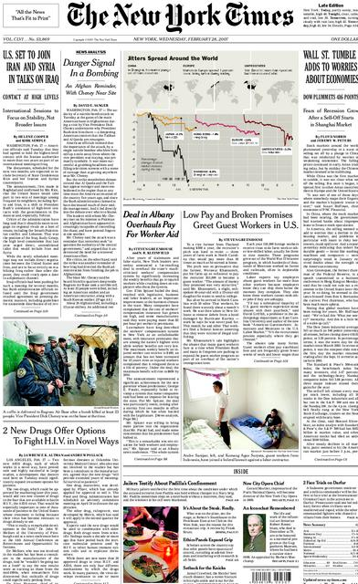

Arthur Krock is quoted as
saying that "the principle onus rests on the printed and electronic process
itself." That may seem like another way of saying that "history is to
blame." But it is the instant consequences of electrically moved information that
makes necessary a deliberate artistic aim in the placing and management of news. In
diplomacy the same electric speed causes the decisions to be announced before they are
made in order to ascertain the varying responses that might occur when such decisions
actually are made. Such procedure, quite inevitable at the electric speed that involves
the entire society in the decision-making process, shocks the old press men because it
abdicates any definite point of view. As the speed of information increases, the tendency
is for politics to move away from representation and delegation of constituents toward
immediate involvement of the entire community in the central acts of decision. Slower
speeds of information make delegation and representation mandatory. Associated with such
delegation are the points of view of the different sectors of public interest that are
expected to be put forward for processing and consideration by the rest of the community.
When the electric speed is introduced into such a delegated and representational
organization, this obsolescent organization can only be made to function by a series of
subterfuges and makeshifts. These strike some observers as base betrayals of the original
aims and purposes of the established forms.
When we
abandon syntax and point of view, individual gestures and archetypes, freed from the
manacles of context, stand out boldly. The front page of the modern newspaper is a daily
revelation of the 'collective unconscious.'

The massive
theme of the press can be managed only by direct contact with the formal patterns of the
medium in question. It is thus necessary to state at once that "human interest"
is a technical term meaning that which happens when multiple book pages or multiple
information items are arranged in a mosaic
on one sheet. The book is a private confessional form that provides a "point of
view." The press is a group confessional form that provides communal participation.
It can "color" events by using them or by not using them at all. But it is the
daily communal exposure of multiple items in
juxtaposition that gives the press its complex dimension of human interest.
The book
form is not a communal mosaic or corporate image but a private voice. One of the
unexpected effects of TV on the press has been a great increase in the popularity of Time
and Newsweek. Quite inexplicably to themselves and without any new effort at
subscription, their circulations have more than doubled since TV. These news magazines are
preeminently mosaic in form, offering not windows on the world like the old picture
magazines, but presenting corporate images of society in action. Whereas the spectator of
a picture magazine is passive, the reader of a news magazine becomes much involved in the making of meanings for the corporate image.
Thus the TV habit of involvement in mosaic image has greatly strengthened the appeal of
these news magazines, but at the same time has diminished the appeal of the older
pictorial feature magazines.
'To see the world in a grain of sand.' For the poetic effects achieved by
the juxtaposition of disparate elements, see T.S. Eliot on the "heterogeneity of
material compelled into unity by the operation of the poet's mind," in his essay, The
Metaphysical Poets.
Many inventions are discovered serendipitously while searching for
something else. Chance, the absence of human agency, is as important to the creative
process as it is to human evolution, and because it introduces problems heretofore
unknown, it is more efficient than 'the technique of discovery,' which is applicable only
to known problems. Pure chance is the premier medium under which all other media in the
hierarchy of technologies are subsumed and operate.
Both book
and newspaper are confessional in character, creating the effect of inside story by
their mere form, regardless of content. As the book page yields the inside story of the
author's mental adventures, so the press page yields the inside story of the community in
action and interaction. It is for this reason that the press seems to be performing its
function most when revealing the seamy side. Real news is bad news—bad news about somebody,
or bad news for somebody. In 1962, when Minneapolis had been for months without a
newspaper, the chief of police said: "Sure, I miss the news, but so far as my job
goes I hope the papers never come back. There is less crime around without a newspaper to
pass around the ideas."
Even before
the telegraph speed-up, the newspaper of the nineteenth century had moved a long way
toward a mosaic form. Rotary steam presses came into use decades before electricity, but
typesetting by hand remained more satisfactory than any mechanical means until the
development of linotype about 1890. With linotype, the press could adjust its form more
fully to the news-gathering of the telegraph and the news-printing of the rotary presses.
It is typical and significant that the linotype answer to the long-standing slowness of
typesetting did not come from those directly engaged with the problem. Fortunes had been
vainly spent on typesetting machines before James Clephane, seeking a fast way of writing
out and duplicating shorthand notes, found a way to combine the typewriter and the
typesetter. It was the typewriter that solved the utterly different typesetting problem.
Today the publishing of book and newspaper both depends on the typewriter.
Equitone strips gesture from speech and substitues logical connection for the frisson
of interval.
The speed-up
of information gathering and publishing naturally created new forms of arranging material
for readers. As early as 1830 the French poet Lamartine had said, "The book arrives
too late," drawing attention to the fact that the book and the newspaper are quite
different forms. Slow down typesetting and news-gathering, and there occurs a change, not
only in the physical appearance of the press, but also in the prose style of those writing
for it. The first great change in style came early in the eighteenth century, when the
famous Tatler and Spectator of Addison and Steele discovered a new prose
technique to match the form of the printed word. It was the technique of equitone. It
consisted in maintaining a single level of tone and attitude to the reader throughout the
entire composition. By this discovery, Addison and Steele brought written discourse into
line with the printed word and away from the variety of pitch and tone of the spoken, and
of even the hand-written, word. This way of bringing language into line with print must be
clearly understood. The telegraph broke language away again from the printed word, and
began to make erratic noises called headlines, journalese, and telegraphese—phenomena
that still dismay the literary community with its mannerisms of supercilious equitone that
mime typographic uniformity. Headlines produces such effects as
BARBER HONES
TONSILS
FOR OLD-TIMER'S EVENT
For looking at ads the reader is rewarded with newsprint; for sitting through a
commercial the TV viewer is rewarded with programming.
In the new world of automation, materials can be developed by the technique of
discovery, i.e. 'the technique of starting with the thing to be discovered and
working back, step by step, as on an assembly line, to the point at which it is necessary
to start in order to reach the desired object.' Thus, the pre-assigned properties of a new
material are reducible to pure information and lines of computer code.
The first product placement: the movies of the 40s and 50s were one long
cigarette commercial.
referring to Sal (the Barber)
Maglie, the swarthy curve-ball artist with the old Brooklyn Dodgers, when he was to be
guest speaker at a Ball Club dinner. The same community admires the varied tonality and
vigor of Aretino, Rabelais, and Nashe, all of whom wrote prose before the print pressure
was strong enough to reduce the language gestures to uniform lineality. Talking with an
economist who was serving on an unemployment commission, I asked him whether he had
considered newspaper reading as a form of paid employment. I was not wrong in supposing
that he would be incredulous. Nevertheless, all media that mix ads with other programming
are a form of "paid learning." In years to come, when the child will be paid to
learn, educators will recognize the sensational press as the forerunner of paid learning.
One reason that it was difficult to see this fact earlier is that the processing and
moving of information had not been the main business of a mechanical and industrial world.
It is, however, easily the dominant business and means of wealth in the electric world. At
the end of the mechanical age people still imagined that press and radio and even TV were
merely forms of information paid for by the makers and users of "hardware," like
cars and soap and gasoline. As automation
takes hold, it becomes obvious that information is the crucial commodity, and that
solid products are merely incidental to information movement. The early stages by
which information itself became the basic economic commodity of the electric age were
obscured by the ways in which advertising and entertainment put people off the track.
Advertisers pay for space and time in paper and magazine, on radio and TV; that is, they
buy a piece of the reader, listener, or viewer as definitely as if they hired our homes
for a public meeting. They would gladly pay the reader, listener, or viewer directly for
his time and attention if they knew how to do so. The only way so far devised is to put on
a free show. Movies in America have not developed advertising intervals simply because the
movie itself is the greatest of all forms of advertisement for consumer goods.
Those who
deplore the frivolity of the press and its natural form of group exposure and communal
cleansing simply ignore the nature of the medium and demand that it be a book, as it tends
to be in Europe. The book arrived in western Europe long before the newspaper; but Russia
and middle Europe developed the book and newspaper almost together, with the result that
they have never unscrambled the two forms. Their journalism exudes the private point of
view of the literary mandarin. British and American journalism, however, have always
tended to exploit the mosaic form of the newspaper format in order to present the discontinuous variety and incongruity of ordinary
life. The monotonous demands of the literary community—that the newspaper use
its mosaic form to present a fixed point of view on a single plane of
perspective—represent a failure to see the form of the press at all. It is as if the
public were suddenly to demand that department stores have only one department.
A prophesy borne out in the 21st century.
The
classified ads (and stock-market quotations) are the bedrock of the press. Should an
alternative source of easy access to such diverse daily information be found, the press
will fold. Radio and TV can handle the sports, news, comics, and pictures. The editorial,
which is the one book-feature of the newspaper, has been ignored for many years, unless
put in the form of news or paid advertisement.
Ads, like dreams, jokes, puns, myths, nursery rhymes, fables, slips of the
tongue, etc., were considered trivial epiphenomena, of no empirical significance, and
hence, unworthy of research.
If our press
is in the main a free entertainment service paid for by advertisers who want to buy
readers, the Russian press is in toto the basic mode of industrial promotion. If we
use news, political and personal, as entertainment to capture ad readers, the Russians use
it as a means of promotion for their economy. Their political news has the same aggressive
earnestness and posture as the voice of the sponsor in an American ad. A culture that gets
the newspaper late (for the same reasons that industrialization is delayed) and one that
accepts the press as a form of the book and regards industry as group political action, is
not likely to seek entertainment in the news. Even in America, literate people have small
skill in understanding the iconographic varieties of the ad world. Ads are ignored or
deplored, but seldom studied and enjoyed.
Anybody who
could think that the press has the same function in America and Russia, or in France and
China, is not really in touch with the medium. Are we to suppose that this kind of media
illiteracy is characteristic only of Westerners, and that Russians know how to correct the
bias of the medium in order to read it right? Or do people vaguely suppose that the heads
of state in the various countries of the world know that the newspaper has totally diverse
effects in different cultures? There is no basis for such assumptions. Unawareness of the
nature of the press in its subliminal or latent action is as common among politicians as
among political scientists. For example, in oral Russia both Pravda and Izvestia
handle domestic news, but the big international themes come to the West over Radio
Moscow. In visual America, radio and television handle the domestic stories, and
international affairs get their formal treatment in Time magazine and The New
York Times. As a foreign service, the bluntness of Voice of America in no way
compares to the sophistication of the BBC and Radio Moscow, but what it lacks in verbal
content it makes up in the entertainment value of its American jazz. The implications of
this difference of stress are important for an understanding of the kinds of opinions and
decisions natural to an oral, as opposed to a visual, culture.
A friend of
mine who tried to teach something about the forms of media in secondary school was struck
by one unanimous response. The students could not for a moment accept the suggestion that
the press or any other public means of communication could be used with base intent. They
felt that this would be akin to polluting the air or the water supply, and they didn't
feel that their friends and relatives employed in these media would sink to such
corruption. Failure in perception occurs precisely in giving attention to the program
"content" of our media while ignoring the form, whether it be radio or print or
the English language itself. There have been countless Newton Minows (formerly head of the
Federal Communications Commission) to talk about the Wasteland of the Media, men who know
nothing about the form of any medium whatever. They imagine that a more earnest tone and a
more austere theme would pull up the level of the book, the press, the movie, and TV. They
are wrong to a farcical degree. They have only to try out their theory for fifty
consecutive words in the mass medium of the English language. What would Mr. Minow do,
what would any advertiser do, without the well-worn and corny cliches of popular speech?
Suppose that we were to try for a few sentences to raise the level of our daily English
conversation by a series of sober and serious sentiments? Would this be a way of getting
at the problems of improving the medium? If all English were enunciated at a Mandarin
level of uniform elegance and sententiousness, would the language and its users be better
served? There comes to mind the remark of Artemus Ward that "Shakespeare wrote good
plays but he wouldn't have succeeded as the Washington correspondent of a New York daily
newspaper. He lacked the reckisit fancy and imagination."
The
book-oriented man has the illusion that the press would be better without ads and without
the pressure from the advertiser. Reader surveys have astonished even publishers with the
revelation that the roving eyes of newspaper readers take equal satisfaction in ads and
news copy. During the Second War, the U.S.O. sent special issues of the principal American
magazines to the Armed Forces, with the ads omitted. The men insisted on having the ads
back again. Naturally. The ads are by far the best part of any magazine or newspaper. More
pains and thought, more wit and art go into the making of an ad than into any prose
feature of press or magazine. Ads are news. What is wrong with them is that they
are always good news. In order to balance off the effect and to sell good news, it
is necessary to have a lot of bad news. Moreover, the newspaper is a hot medium. It has to
have bad news for the sake of intensity and reader participation. Real news is bad
news, as already noted, and as any newspaper from the beginning of print can testify.
Floods, fires, and other communal disasters
by land and sea and air outrank any kind of private horror or villainy as news. Ads,
in contrast, have to shrill their happy message loud and clear in order to match the
penetrating power of bad news.
(McLuhan must mean superior to the House of
Representatives. Congress is bicameral and includes both Senate and House.)
Commentators
on the press and the American Senate have noted that since the Senate began its prying
into unsavory subjects it has assumed a role superior to Congress. In fact, the great
disadvantage of the Presidency and the Executive arm in relation to public opinion is that
it tries to be a source of good news and noble directive. On the other hand, Congressmen
and Senators have the free of the seamy side so necessary to the vitality of the press.
Superficially,
this may seem cynical, especially to those who imagine that the content of a medium is a
matter of policy and personal preference, and for whom all corporate media, not only radio
and the press but ordinary popular speech as well, are debased forms of human expression
and experience. Here I must repeat that the newspaper, from its beginnings, has tended,
not to the book form, but to the mosaic or participational form. With the speed-up of
printing and news-gathering, this mosaic form has become a dominant aspect of human
association; for the mosaic form means, not a detached "point of view," but
participation in process. For that reason, the press is inseparable from the democratic
process, but quite expendable from a literary or book point of view.
Again, the
book-oriented man misunderstands the collective mosaic form of the press when he complains
about its endless reports on the seamy underside of the social garment. Both book and
press are, in their very format, dedicated to the job of revealing the inside story,
whether it is Montaigne giving to the private reader the delicate contours of his mind, or
Hearst and Whitman resonating their barbaric yawps over the roofs of the world. It is the
printed form of public address and high intensity with its precise uniformity of
repetition that gives to book and press alike the special character of public
confessional.
The quality of human perception and consciousness is dependent on our re-experiencing
events in translation, similar to the way we re-process our perceptions via metaphor.
Media like the press are not external objects, but internalized extensions that constitute
the stuff of human consciousness as much as any configuration of the senses.
The first
items in the press to which all men turn are the ones about which they already know. If we
have witnessed some event, whether a ball game or a stock crash or a snowstorm, we turn to
the report of that happening, first. Why? The answer is central to any understanding of
media. Why does a child like to chatter about the events of its day, however jerkily? Why
do we prefer novels and movies about familiar scenes and characters? Because for rational
beings to see or re-cognize their experience in a new material form is an unbought grace
of life. Experience translated into a new medium literally bestows a delightful playback
of earlier awareness. The press repeats the
excitement we have in using our wits, and by using our wits we can translate the outer
world into the fabric of our own beings. This excitement of translation explains why
people quite naturally wish to use their senses all the time. Those external extensions of
sense and faculty that we call media we use as constantly as we do our eyes and ears,
and from the same motives. On the other hand, the book-oriented man considers this nonstop
use of media as debased; it is unfamiliar to him in the book-world.
Just as historians shape historical reality, journalists fashion the zeitgeist, i.e.
the atmospherics of a period.
The determination of what events constitute 'news' implies a point of view, as has
become clear with the recent fashion for strident political advocacy by contemporary
'reporters.'
Up to this
point we have discussed the press as a mosaic successor to the book-form. The mosaic is
the mode of the corporate or collective image and commands deep participation. This
participation is communal rather than private, inclusive rather than exclusive. Further
features of its form can best be grasped by a few random views taken from outside the
present form of the press. Historically, for example, newspapers had waited for news to
come to them. The first American newspaper, issued in Boston by Benjamin Harris on
September 25, 1690, announced that it was to be "furnished once a month (or if any
Glut of Occurrences happen, oftener)." Nothing could more plainly indicate the idea
that news was something outside and beyond the newspaper. Under such rudimentary
conditions of awareness, a principal function of the newspaper was to correct rumors and
oral reports, as a dictionary might provide "correct" spellings and meanings for
words that had long existed without the benefit of dictionaries. Fairly soon the press
began to sense that news was not only to be reported but also gathered, and, indeed, to be
made. What went into the press was
news. The rest was not news. "He made the news" is a strangely ambiguous
phrase, since to be in the newspaper is both to be news and to make news. Thus
"making the news," like "making good," implies a world of actions and
fictions alike. But the press is a daily action and fiction or thing made, and it is made
out of just about everything in the community. By the mosaic means, it is made into a
communal image or cross-section.
The power of media to impose themselves ontologically, as absolute reality, such that any
new environment is immediately dismissed as artificial, synthetic or ersatz.
When a
conventional critic like Daniel Boorstin complains that modern ghost-writing, teletype,
and wire services create an insubstantial world of "pseudo-events," he declares, in effect,
that he has never examined the nature of any medium prior to those of the electric age.
For the pseudo or fictitious character has always permeated the media, not just those of
recent origin.
Reading a day-old newspaper is not unlike accidentally skipping a page of a novel. Once
we have discovered the omission, we are reluctant to go back and read the page we missed
because it has lost its existential immediacy, i.e. it is like stale news: there is no
suspense.
Ad men are like symbolist poets, creating effects, mixing images and events with
promiscuous abandon to manufacture an illusion.
Long before
big business and corporations became aware of the image of their operation as a fiction to
be carefully tattooed upon the public sensorium, the press had created the image of the
community as a series of on-going actions unified by datelines. Apart from the vernacular
used, the dateline is the only organizing principle of the newspaper image of the
community. Take off the dateline, and one day's paper is the same as the next. Yet to read
a week-old newspaper without noticing that it is not today's is a disconcerting
experience. As soon as the press recognized that news presentation was not a repetition of
occurrences and reports but a direct cause of events, many things began to happen.
Advertising and promotion, until then restricted, broke onto the front page, with the aid
of Barnum, as sensational stories. Today's press agent regards the newspaper as a
ventriloquist does his dummy. He can make it say what he wants. He looks on it as a
painter does his palette and tubes of pigment; from the endless resources of available
events, an endless variety of managed mosaic effects can be attained. Any private client
can be ensconced in a wide range of different patterns and tones of public affairs or
human interest and depth items.
The significance of the expression, 'off the
record.' A journalist promises not to reveal information for publication, but to use it
only for background. Similarly, when he does print a story, he promises not to reveal his
sources even under threat of prosecution and imprisonment.
Participational Democracy:
the controlled news leak amounts to an instant referendum by the public.
If we pay
careful attention to the fact that the press is a mosaic, participant kind or organization
and a do-it-yourself kind of world, we can see why it is so necessary to democratic
government. Throughout his study of the press in The Fourth Branch of Government, Douglas
Cater is baffled by the fact that amidst the extreme fragmentation of government
departments and branches, the press somehow manages to keep them in relation to each other
and to the nation. He emphasizes the paradox that the press is dedicated to the process of
cleansing by publicity, and yet that,
in the electronic world of the seamless web of events, most affairs must be kept secret.
Top secrecy is translated into public participation and responsibility by the magic
flexibility of the controlled news leak.
It is by
this kind of ingenious adaptation from day to day that Western man is beginning to
accommodate himself to the electric world of total interdependence. Nowhere is this
transforming process of adaptation more visible than in the press. The press, in itself,
presents the contradiction of an individualistic technology dedicated to shaping and
revealing group attitudes.
It might be
well now to observe how the press has been modified by the recent developments of
telephone, radio, and TV. We have seen already that the telegraph is the factor that has
done most to create the mosaic image of the modern press, with its mass of discontinuous
and unconnected features. It is this group-image of the communal life, rather than any
editorial outlook or slanting, that constitutes the participant of this medium. To the
book-man of detached private culture, this is the scandal of the press: its shameless
involvement in the depths of human interest and sentiment. By eliminating time and space in news presentation,
the telegraph dimmed the privacy of the book-form, and heightened, instead, the new public
image in the press.
The first
harrowing experience for the press man visiting Moscow is the absence of telephone books.
A further horrifying revelation is the absence of central switchboards in government
departments. You know the number, or else. The student of media is happy to read a hundred
volumes to discover two facts such as these. They floodlight a vast murky area of the
press-world, and illuminate the role of telephone as seen through another culture. The
American newspaperman in large degree assembles his stories and processes his data by
telephone because of the speed and immediacy of the oral process. Our popular press is a
near approximation to the grapevine. The Russian and European newspaperman is, by
comparison, a litterateur. It is a paradoxical situation, but the press in literate
America has an intensely oral character, while in oral Russia and Europe the press has a
strongly literary character and function.
In the old monolithic Soviet Union there was no division of power, or checks and
balances between the executive, judiciary and legislative branches of government; there is
only a little more now.
The English
dislike the telephone so much that they substitute numerous mail deliveries for it. The
Russians use the telephone for a status symbol, like the alarm clock worn by tribal chiefs
as an article of attire in Africa. The mosaic of the press image in Russia is felt as an
immediate form of tribal unity and participation. Those features of the press that we find
most discordant with austere individual standards of literary culture are just the ones
that recommend it to the Communist Party. "A newspaper," Lenin once declared,
"is not only a collective propagandist and collective agitator; it is also a
collective organizer." Stalin called it "the most powerful weapon of our
Party." Khrushchev cites it as "our chief ideological weapon." These men
had more an eye to the collective form of the press mosaic, with its magical power to
impose its own assumptions, than to the printed word as expressing a private point of
view. In oral Russia, fragmentation of government powers is unknown. Not for them our
function of the press as unifier of fragmented departments. The Russian monolith has quite
different uses for the press mosaic. Russia now needs the press (as we formerly did the
book) to translate a tribal and oral community into some degree of visual, uniform culture
able to sustain a market system.
The Egyptian fellah is, however, not Bedouin,
Berber or Arab. These ethnic minorities make up only a small fraction of the Egyptian
population.
Arab nationalism as practiced by Nasser to combat Zionism was this kind of
'not-too-involved' or political nationalism.
In Egypt the
press is needed to effect nationalism, that visual kind of unity that springs men out of
local and tribal patterns. Paradoxically, radio has come to the fore in Egypt as the
rejuvenator of the ancient tribes. The battery radio carried on the camel gives to the
Bedouin tribes a power and vitality unknown before, so that to use the world
"nationalism" for the fury of oral agitation that the Arabs have felt by radio
is to conceal the situation from ourselves. Unity of the Arab-speaking world can only come
by the press. Nationalism was unknown to the Western world until the Renaissance, when
Gutenberg made it possible to see the mother tongue in uniform dress. Radio does
nothing for this uniform visual unity so necessary to nationalism. In order to restrict
radio-listening to national programs, some Arab governments have passed a law forbidding
the use of private headphones, in effect enforcing a tribal collectivism in their radio
audiences. Radio restores tribal sensitivity and exclusive involvement in the web of
kinship. The press, on the other hand, creates a visual, not-too-involved kind of unity
that is hospitable to the inclusion of many tribes, and to diversity of private outlook.
I.e. the question-and-answer interview became
an art form.
If telegraph
shortened the sentence, radio shortened the news story, and TV injected the interrogative
mood into journalism. In fact, the press is now not only a telephoto mosaic of the human
community hour by hour, but its technology is also a mosaic of all the technologies of the
community. Even in its selection of the newsworthy, the press prefers those persons who
have already been accorded some notoriety existence in movies, radio, TV, and drama. By
this fact, we can test the nature of the press medium, for anybody who appears only in the
newspaper is, by that token, an ordinary citizen.
Wallpaper
manufacturers have recently begun to issue wallpaper that presents the appearance of a
French newspaper. The Eskimo sticks magazine pages on the ceiling of his igloo to deter
drip. But even an ordinary newspaper on a kitchen floor will reveal news items that one
had missed when the paper was in hand. Yet whether one uses the press for privacy in public
conveyances, or for involvement in the communal while enjoying privacy, the mosaic
of the press manages to effect a complex many-leveled function of group-awareness and
participation such as the book has never been able to perform.
The format of the press—that is, its
structural characteristics —were quite naturally taken over by the poets after
Baudelaire in order to evoke an inclusive awareness. Our ordinary newspaper page
today is not only symbolist and surrealist in an avant-garde way, but it was the
earlier inspiration of symbolism and surrealism in art and poetry, as anybody can
discover by reading Flaubert or Rimbaud. Approached as newspaper form, any part of Joyce's
Ulysses or any poem of T. S. Eliot's before the Quartets is more readily
enjoyed. Such, however, is the austere continuity of book culture that it scorns to notice
these liaisons dangereuses among the media, especially the scandalous affairs of
the book-page with electronic creatures from the other side of the linotype.
In view of
the inveterate concern of the press with cleansing by publicity, it may be well to ask if
it does not set up an inevitable clash with the medium of the book. The press as a collective and communal image
assumes a natural posture of opposition to all private manipulation. Any mere
individual who begins to stir about as if he were a public something-or-other is going to
get into the press. Any individual who manipulates the public for his private good may
also feel the cleansing power of publicity. The cloak of invisibility, therefore, would
seem to fall most naturally on those who own newspapers or who use them extensively for
commercial ends. May not this explain the strange obsession of the bookman with the
press-lords as essentially corrupt? The merely private and fragmentary point of view
assumed by the book reader and writer finds natural grounds for hostility toward the big
communal power of the press. As forms, as media, the book and the newspaper would seem to
be as incompatible as any two media could be. The owners of media always endeavor to give
the public what it wants, because they sense that their power is in the medium and
not in the message or the program.